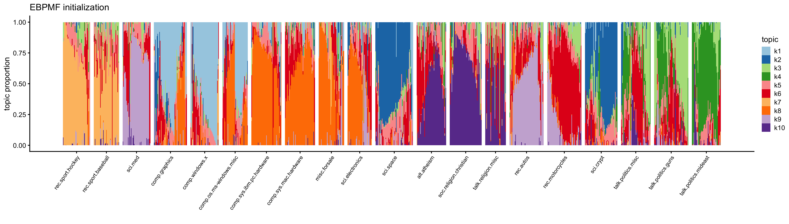
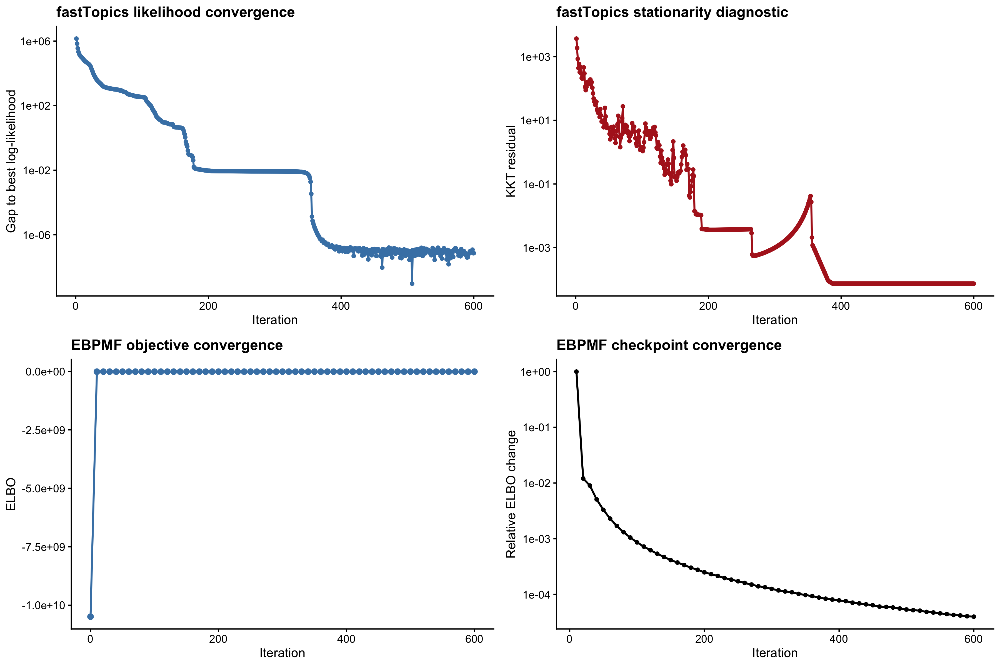
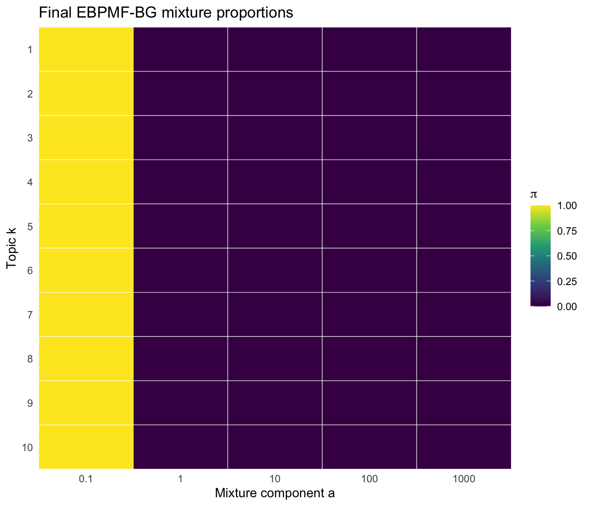
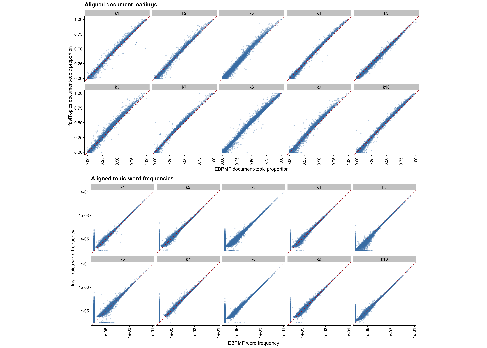
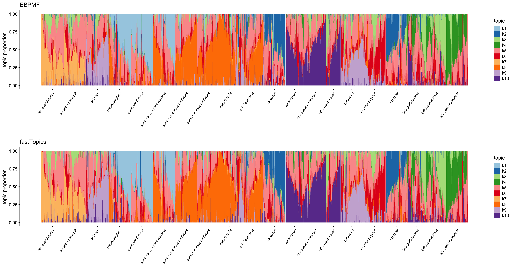

Last updated: 2026-10-15
Checks: 7 0
Knit directory: background/
This reproducible R Markdown analysis was created with workflowr (version 1.7.2). The Checks tab describes the reproducibility checks that were applied when the results were created. The Past versions tab lists the development history.
Great! Since the R Markdown file has been committed to the Git repository, you know the exact version of the code that produced these results.
Great job! The global environment was empty. Objects defined in the global environment can affect the analysis in your R Markdown file in unknown ways. For reproduciblity it’s best to always run the code in an empty environment.
The command set.seed(20260201) was run prior to running
the code in the R Markdown file. Setting a seed ensures that any results
that rely on randomness, e.g. subsampling or permutations, are
reproducible.
Great job! Recording the operating system, R version, and package versions is critical for reproducibility.
Nice! There were no cached chunks for this analysis, so you can be confident that you successfully produced the results during this run.
Great job! Using relative paths to the files within your workflowr project makes it easier to run your code on other machines.
Great! You are using Git for version control. Tracking code development and connecting the code version to the results is critical for reproducibility.
The results in this page were generated with repository version 12e05e0. See the Past versions tab to see a history of the changes made to the R Markdown and HTML files.
Note that you need to be careful to ensure that all relevant files for
the analysis have been committed to Git prior to generating the results
(you can use wflow_publish or
wflow_git_commit). workflowr only checks the R Markdown
file, but you know if there are other scripts or data files that it
depends on. Below is the status of the Git repository when the results
were generated:
Ignored files:
Ignored: .DS_Store
Ignored: .RData
Ignored: .Rhistory
Ignored: .Rproj.user/
Ignored: analysis/.DS_Store
Ignored: local/
Untracked files:
Untracked: analysis/.ipynb_checkpoints/
Untracked: analysis/ebpmf_gamma.Rmd
Untracked: code/
Unstaged changes:
Modified: analysis/em.Rmd
Deleted: analysis/main.Rmd
Note that any generated files, e.g. HTML, png, CSS, etc., are not included in this status report because it is ok for generated content to have uncommitted changes.
These are the previous versions of the repository in which changes were
made to the R Markdown (analysis/bg_news.Rmd) and HTML
(docs/bg_news.html) files. If you’ve configured a remote
Git repository (see ?wflow_git_remote), click on the
hyperlinks in the table below to view the files as they were in that
past version.
| File | Version | Author | Date | Message |
|---|---|---|---|---|
| Rmd | 12e05e0 | jiheeyy | 2026-10-15 | wflow_publish(c("analysis/bg_news.Rmd", "analysis/bg_newsbadsample.Rmd")) |
| Rmd | 754128c | jiheeyy | 2026-10-14 | Resolve merge conflict in index.Rmd (keep remote version) |
| html | 34be90a | jiheeyy | 2026-09-24 | Build site. |
| Rmd | e88e3f1 | jiheeyy | 2026-09-24 | wflow_publish("analysis/bg_news.Rmd") |
| html | fe723d7 | jiheeyy | 2026-09-24 | Build site. |
| Rmd | f7eae12 | jiheeyy | 2026-09-24 | wflow_publish("analysis/bg_news.Rmd") |
Both models use the full document-by-term count matrix by default.
news <- load_news_data(
here("data", "newsgroups.RData"),
here("data", "train.map")
)K <- 10L
a <- c(0.1, 1, 10, 100, 1000)
ebpmf_maxiter <- 600L
fasttopics_numiter <- 600L
X <- news$X
L_init <- "fasttopics"
set.seed(1)
stopifnot(nrow(X) > 0L, ncol(X) > 0L, all(Matrix::colSums(X) > 0))
ebpmf_elapsed <- system.time({
state <- initialize_state(X, K, a, L_init = L_init)
initial_state <- state
ebpmf <- run_ebpmf_bg_cavi(
state, X, a, max_niter = ebpmf_maxiter, early_stop = FALSE
)
})[["elapsed"]]
set.seed(1)
fasttopics_elapsed <- system.time({
fasttopics <- fastTopics::fit_poisson_nmf(
X, k = K, numiter = fasttopics_numiter,
init.method = "random", verbose = "none"
)
})[["elapsed"]]
fits <- list(
ebpmf = ebpmf,
fasttopics = fasttopics,
dimensions = data.frame(documents = nrow(X), terms = ncol(X), topics = K),
timing = data.frame(
method = c("EBPMF-BG", "fastTopics"),
initialization = c(L_init, "random"),
iterations = c(ebpmf$completed_niter, fasttopics_numiter),
elapsed_seconds = c(ebpmf_elapsed, fasttopics_elapsed)
)
)
fits$dimensions documents terms topics
1 18774 55911 10fits$timing method initialization iterations elapsed_seconds
1 EBPMF-BG fasttopics 600 4962.801
2 fastTopics random 600 588.882Both models are fitted to the same sparse matrix. Timings include initialization and fitting.
Document-topic proportions from the initial background model loadings, before CAVI updates.
plot_news_structure(initial_state$L, news$labels)
| Version | Author | Date |
|---|---|---|
| fe723d7 | jiheeyy | 2026-09-24 |
Show numerical equivalence in ebpmf-bg fasttopics initialization and fasttopics run.
L_fast <- pmax(fasttopics$L, 1e-12)
L_fast <- sweep(L_fast, 2, colMeans(L_fast), "/")
all.equal(initial_state$L, L_fast, check.attributes = FALSE)[1] TRUEmax(abs(initial_state$L - L_fast))[1] 3.410605e-13aligned <- align_news_models(fits)
aligned$alignment_table EBPMF_topic original_fastTopics_topic document_cosine word_cosine
1 k1 k1 0.9983913 0.9999198
2 k2 k2 0.9978255 0.9998955
3 k3 k3 0.9943902 0.9996221
4 k4 k4 0.9978683 0.9998839
5 k5 k5 0.9992597 0.9998861
6 k6 k6 0.9969882 0.9965308
7 k7 k7 0.9980116 0.9978614
8 k8 k8 0.9986081 0.9998424
9 k9 k9 0.9969613 0.9998059
10 k10 k10 0.9983962 0.9999423The assignment matches fastTopics to EBPMF using the average cosine similarity of document-topic proportions and word profiles.
For EBPMF topic k and fastTopics topic h, the matching score is \[ S_{kh}= \frac{ \operatorname{cosine}(\text{doc-topic-prop}^{E}_{\cdot k},\text{doc-topic-prop}^{F}_{\cdot h}) + \operatorname{cosine}(F^{E}_{\cdot k},F^{F}_{\cdot h}) }{2}. \] Topics match well when they have similar documents (in terms of topic contribution degree) and similar words.
plot_news_convergence(fits)
| Version | Author | Date |
|---|---|---|
| fe723d7 | jiheeyy | 2026-09-24 |
The fastTopics likelihood and EBPMF ELBO are different objectives; their magnitudes are not directly comparable.
plot_news_mixprop(fits$ebpmf$state$pi, a)
| Version | Author | Date |
|---|---|---|
| fe723d7 | jiheeyy | 2026-09-24 |
plot_news_agreement(aligned, news$terms)
| Version | Author | Date |
|---|---|---|
| fe723d7 | jiheeyy | 2026-09-24 |
factor document_correlation word_correlation
1 k1 0.998 1.000
2 k2 0.998 1.000
3 k3 0.994 1.000
4 k4 0.998 1.000
5 k5 0.998 1.000
6 k6 0.996 0.997
7 k7 0.998 0.998
8 k8 0.998 1.000
9 k9 0.997 1.000
10 k10 0.998 1.000# The same horizontal position represents different documents in the two panels.
plot_news_structure(aligned, news$labels, plot_sample = FALSE)
| Version | Author | Date |
|---|---|---|
| fe723d7 | jiheeyy | 2026-09-24 |
Both panels show the same sampled documents (sampled after full dataset fitting), grouped by observed newsgroup. Each model uses its own seeded 1D t-SNE ordering within each newsgroup for a smoother document topic graph. Therefore, the horizontal position does not represent same document in the two panels.
Top words in each EBPMF topic, ranked by raw fitted \(F_{jk}\). For EBPMF, these are posterior means \(E_q[F_{jk}]\), without the background multiplier \(f_{0j}\). These values are not normalized topic-word probabilities.
# Set n to 5, 10, 20, etc.; also lists recurring words and their topics.
news_top_words(fits, news$terms, n = 10)$top_words
topic rank EBPMF_word EBPMF_F f0 effective_F
1 k1 1 openwinhome 9.679991 0.001777263 0.01720389
2 k1 2 dealy 9.679909 0.001777277 0.01720388
3 k1 3 shading 9.679846 0.001777289 0.01720388
4 k1 4 ghostscript 9.679830 0.001777291 0.01720388
5 k1 5 argc 9.679475 0.001733099 0.01677549
6 k1 6 popup 9.679465 0.001733099 0.01677547
7 k1 7 resize 9.679438 0.001733105 0.01677548
8 k1 8 nfs 9.679381 0.001733113 0.01677546
9 k1 9 mpeg 9.679276 0.001733133 0.01677547
10 k1 10 funet 9.679272 0.001733134 0.01677548
11 k2 1 unbreakable 9.786727 0.002617130 0.02561313
12 k2 2 cpsr 9.786710 0.002617137 0.02561316
13 k2 3 kipling 9.785211 0.002483781 0.02430432
14 k2 4 gehrels 9.785170 0.002483794 0.02430435
15 k2 5 microcircuits 9.784660 0.002684569 0.02626760
16 k2 6 fraering 9.784598 0.002684584 0.02626758
17 k2 7 kadie 9.784349 0.002684653 0.02626758
18 k2 8 encrypting 9.780454 0.002752635 0.02692202
19 k2 9 astronauts 9.780432 0.002752642 0.02692202
20 k2 10 templeton 9.778661 0.002351611 0.02299561
21 k3 1 hid 9.892026 0.002695296 0.02666194
22 k3 2 wod 9.891111 0.004522944 0.04473694
23 k3 3 entryway 9.890178 0.004645239 0.04594224
24 k3 4 microdistrict 9.890013 0.004279737 0.04232665
25 k3 5 kerosene 9.889944 0.004279762 0.04232661
26 k3 6 dragged 9.888293 0.004158589 0.04112135
27 k3 7 arras 9.888177 0.004158643 0.04112140
28 k3 8 bernadette 9.885819 0.004037736 0.03991633
29 k3 9 upstairs 9.885776 0.004037750 0.03991630
30 k3 10 rethought 9.885771 0.004037755 0.03991632
31 k4 1 sheikh 9.691490 0.001845653 0.01788713
32 k4 2 idf 9.691439 0.001845663 0.01788713
33 k4 3 shai 9.691432 0.001845663 0.01788712
34 k4 4 mutlu 9.691348 0.001845680 0.01788713
35 k4 5 salonica 9.691310 0.001799725 0.01744170
36 k4 6 mohamed 9.689289 0.001892043 0.01833255
37 k4 7 socialism 9.689026 0.001754174 0.01699624
38 k4 8 karabag 9.689024 0.001754178 0.01699627
39 k4 9 warsaw 9.688939 0.001754191 0.01699625
40 k4 10 biden 9.688555 0.001892187 0.01833255
41 k5 1 julie 9.597783 0.001392726 0.01336708
42 k5 2 rude 9.571202 0.001280767 0.01225847
43 k5 3 dictate 9.571196 0.001280769 0.01225849
44 k5 4 insults 9.570889 0.001280809 0.01225848
45 k5 5 toss 9.570056 0.001280919 0.01225847
46 k5 6 annoy 9.522921 0.001132080 0.01078071
47 k5 7 condone 9.508474 0.001094955 0.01041136
48 k5 8 legalization 9.493053 0.001057830 0.01004203
49 k5 9 gladly 9.493024 0.001057830 0.01004201
50 k5 10 capitalism 9.493005 0.001057833 0.01004202
51 k6 1 karr 9.793287 0.002695545 0.02639824
52 k6 2 nmm 9.793285 0.002695545 0.02639824
53 k6 3 seca 9.793260 0.002626678 0.02572374
54 k6 4 cousineau 9.793204 0.002695567 0.02639824
55 k6 5 egreen 9.793151 0.002695583 0.02639825
56 k6 6 bean 9.792134 0.002558095 0.02504921
57 k6 7 dwi 9.791837 0.002558179 0.02504927
58 k6 8 winona 9.791783 0.002558194 0.02504928
59 k6 9 bcci 9.789470 0.002489900 0.02437480
60 k6 10 jaguar 9.789278 0.002489944 0.02437476
61 k7 1 umpires 9.770358 0.002424924 0.02369237
62 k7 2 howe 9.770115 0.002424980 0.02369234
63 k7 3 kariya 9.769927 0.002425032 0.02369239
64 k7 4 andersson 9.769857 0.002425049 0.02369238
65 k7 5 pom 9.769696 0.002363133 0.02308709
66 k7 6 larkin 9.769636 0.002363148 0.02308710
67 k7 7 marlins 9.769582 0.002363161 0.02308710
68 k7 8 padres 9.769575 0.002363163 0.02308710
69 k7 9 calder 9.769495 0.002363183 0.02308710
70 k7 10 umu 9.769441 0.002363195 0.02308709
71 k8 1 motherboards 9.748828 0.002221663 0.02165861
72 k8 2 hdd 9.748116 0.002165069 0.02110534
73 k8 3 smartdrv 9.748065 0.002165079 0.02110533
74 k8 4 tasking 9.747837 0.002278639 0.02221180
75 k8 5 macweek 9.747639 0.002278693 0.02221187
76 k8 6 transformer 9.747617 0.002278700 0.02221190
77 k8 7 winbench 9.747563 0.002278713 0.02221190
78 k8 8 adapters 9.746549 0.002108648 0.02055204
79 k8 9 rts 9.745647 0.002108848 0.02055208
80 k8 10 toner 9.745627 0.002108851 0.02055208
81 k9 1 serum 9.736022 0.002108204 0.02052552
82 k9 2 inflammation 9.736011 0.002108208 0.02052554
83 k9 3 yogurt 9.735962 0.002108219 0.02052554
84 k9 4 supplementation 9.734773 0.002054619 0.02000125
85 k9 5 audi 9.734734 0.002054624 0.02000122
86 k9 6 cesarean 9.732138 0.002216796 0.02157416
87 k9 7 dealership 9.732107 0.002001304 0.01947691
88 k9 8 blooms 9.731996 0.002001334 0.01947697
89 k9 9 carbs 9.731981 0.002001335 0.01947695
90 k9 10 crohn 9.731977 0.002001337 0.01947697
91 k10 1 bestiality 9.684215 0.001807857 0.01750767
92 k10 2 magi 9.684137 0.001807871 0.01750767
93 k10 3 siemon 9.684070 0.001807884 0.01750767
94 k10 4 omniscient 9.683902 0.001807914 0.01750766
95 k10 5 iniquity 9.683883 0.001762898 0.01707170
96 k10 6 elijah 9.683749 0.001762921 0.01707168
97 k10 7 congregation 9.683569 0.001762954 0.01707168
98 k10 8 bil 9.682969 0.001763061 0.01707167
99 k10 9 suis 9.681595 0.001853378 0.01794365
100 k10 10 sinned 9.681544 0.001718294 0.01663573
$duplicate_keywords
[1] word topics
<0 rows> (or 0-length row.names)# Within each topic k, list n words that have f_{jk} closest to 1; at the bottom. also list recurring words and their topics.
news_background_words(fits, news$terms, n = 5)$background_words
topic rank EBPMF_word EBPMF_F distance_from_1 f0 effective_F
1 k1 1 reusable 1.0000931 9.305472e-05 0.0016132481 0.0016133982
2 k1 2 novel 0.9997333 2.667100e-04 0.0025739389 0.0025732524
3 k1 3 itch 0.9991936 8.064020e-04 0.0003791657 0.0003788599
4 k1 4 aq 1.0008733 8.732949e-04 0.0012754306 0.0012765444
5 k1 5 masks 1.0011964 1.196389e-03 0.0064896860 0.0064974502
6 k2 1 costly 0.9998793 1.206663e-04 0.0021759455 0.0021756829
7 k2 2 additionally 1.0003243 3.243195e-04 0.0027977907 0.0027986981
8 k2 3 mossad 1.0004767 4.766691e-04 0.0013472181 0.0013478603
9 k2 4 maintains 1.0005375 5.374658e-04 0.0022596508 0.0022608653
10 k2 5 constitutions 0.9993965 6.034563e-04 0.0008380250 0.0008375193
11 k3 1 continuous 1.0003709 3.708731e-04 0.0035313985 0.0035327082
12 k3 2 ulowell 1.0011742 1.174150e-03 0.0240938246 0.0241221144
13 k3 3 strikes 1.0028648 2.864844e-03 0.0222512112 0.0223149575
14 k3 4 mcmaster 0.9971300 2.869964e-03 0.0012251205 0.0012216044
15 k3 5 explore 0.9963019 3.698125e-03 0.0022814597 0.0022730226
16 k4 1 programme 0.9998341 1.659152e-04 0.0014194576 0.0014192221
17 k4 2 smeared 0.9997183 2.817296e-04 0.0004458786 0.0004457530
18 k4 3 examiner 0.9994997 5.002758e-04 0.0033445201 0.0033428469
19 k4 4 weights 0.9994375 5.625179e-04 0.0010411426 0.0010405570
20 k4 5 reviewers 1.0006257 6.257085e-04 0.0004534839 0.0004537676
21 k5 1 limitations 1.0025838 2.583804e-03 0.0043725486 0.0043838464
22 k5 2 optimally 0.9973371 2.662854e-03 0.0005403157 0.0005388769
23 k5 3 authoritarian 0.9953920 4.608023e-03 0.0006175870 0.0006147412
24 k5 4 csupomona 0.9953606 4.639443e-03 0.0003989206 0.0003970699
25 k5 5 hopes 0.9953165 4.683516e-03 0.0060714898 0.0060430539
26 k6 1 mcgowan 0.9998846 1.154005e-04 0.0005479567 0.0005478935
27 k6 2 counted 0.9951355 4.864524e-03 0.0065052334 0.0064735885
28 k6 3 inexpensive 1.0055391 5.539080e-03 0.0111294935 0.0111911407
29 k6 4 suspicious 0.9938395 6.160519e-03 0.0027478831 0.0027309547
30 k6 5 shoes 0.9936663 6.333727e-03 0.0037649087 0.0037410628
31 k7 1 administer 0.9999765 2.351643e-05 0.0005422230 0.0005422103
32 k7 2 ncar 0.9997919 2.081023e-04 0.0043954479 0.0043945332
33 k7 3 tri 0.9997512 2.487897e-04 0.0019164308 0.0019159541
34 k7 4 icl 0.9997061 2.939254e-04 0.0006106116 0.0006104321
35 k7 5 exciting 1.0005047 5.046902e-04 0.0101055233 0.0101106235
36 k8 1 joel 1.0002807 2.806601e-04 0.0235900205 0.0235966413
37 k8 2 desiring 1.0004578 4.577982e-04 0.0005556268 0.0005558812
38 k8 3 handful 0.9994451 5.549210e-04 0.0012775208 0.0012768119
39 k8 4 btr 0.9993549 6.451399e-04 0.0016458010 0.0016447392
40 k8 5 emx 0.9992984 7.016403e-04 0.0015049972 0.0015039413
41 k9 1 nucleus 1.0005226 5.226450e-04 0.0011448477 0.0011454461
42 k9 2 dud 1.0006545 6.544620e-04 0.0005476281 0.0005479865
43 k9 3 rigged 1.0008450 8.449676e-04 0.0004810636 0.0004814701
44 k9 4 validate 1.0008655 8.655277e-04 0.0012471861 0.0012482655
45 k9 5 equatorial 1.0008961 8.960905e-04 0.0007614781 0.0007621605
46 k10 1 cruelty 0.9999269 7.308492e-05 0.0007690370 0.0007689808
47 k10 2 pertaining 1.0006152 6.151812e-04 0.0017182992 0.0017193563
48 k10 3 graciously 1.0006894 6.893594e-04 0.0005145900 0.0005149447
49 k10 4 sadly 1.0009513 9.512720e-04 0.0048267064 0.0048312980
50 k10 5 hayward 0.9984275 1.572522e-03 0.0008744575 0.0008730824
$duplicate_background_words
[1] word topics
<0 rows> (or 0-length row.names)Change word, topic below.
word <- "stephanopoulos"
topic <- 6LSummary object returns more specific occurrences of a certain word. On the other hand, document object prints information of a single document containing the word, including the sorted word count of one document containing the word.
Total_tokens 5044 means there were total of 5044 words in that document, whereas word_count is specific to the word of interest. topic_proportion means every document containing the selected word has at the lowest/highest, such ratio of document-topic proportions related to the selected topic.
# Return n documents per group: highest and lowest topic membership.
news_word_documents(news, aligned$L_ebpmf_topics, word = word, k = topic, n=1) $summary
word topic documents_containing fraction_of_documents
1 stephanopoulos k6 6 0.0003195909
total_occurrences
1 450
$documents
membership document_row newsgroup topic_proportion word_count
1 highest 10723 talk.politics.misc 1.134118e-01 1
2 lowest 10591 talk.politics.misc 3.226901e-14 125
total_tokens
1 174
2 5742
word_counts
1 the (14), and (6), in (6), to (6), of (4), with (4), his (3), like (2), on (2), get (2), an (2), americans (2), could (2), slick (2), tax (2), sg (2), care (2), improve (2), health (2), standing (2), technet (2), willie (2), ipser (2), resources (1), it (1), for (1), go (1), one (1), national (1), truth (1)
2 the (368), to (195), that (195), it (137), mr (127), stephanopoulos (125), we (107), of (102), and (95), is (91), in (82), you (82), he (69), on (68), have (59), this (58), president (54), not (52), re (49), are (43), if (43), what (43), for (42), has (42), know (42), going (42), but (41), they (41), at (41), will (41)The membership column identifies the highest and lowest
groups. Both groups contain only documents with the searched word; they
may overlap when few documents contain it.
effective_documents sums document-topic proportions.
dominant_documents assigns each document to the topic
associated with its largest document-topic proportion.
news_topic_sizes(news, aligned$L_ebpmf_topics) effective_documents dominant_documents
k1 1594.5150 1851
k2 1198.0708 1316
k3 1407.6373 1058
k4 999.6683 1029
k5 5302.0981 4649
k6 2037.5136 1566
k7 965.9648 989
k8 2567.9900 3256
k9 1197.1811 1327
k10 1503.3610 1733news_distinctive_words(aligned, news$terms) factor EBPMF
1 k1 file, server, jpeg, ftp, image, gif, motif, files
2 k2 encryption, clipper, key, launch, space, orbit, escrow, privacy
3 k3 was, had, koresh, batf, went, were, stephanopoulos, fire
4 k4 israeli, arab, israel, turks, turkish, war, genocide, arabs
5 k5 you, it, to, if, that, do, have, but
6 k6 edu, com, writes, article, apr, dod, cramer, uiuc
7 k7 game, hockey, players, baseball, team, season, nhl, games
8 k8 scsi, card, controller, ide, drive, mhz, mb, drives
9 k9 car, patients, insurance, cars, engine, disease, health, hiv
10 k10 god, jesus, bible, christ, church, christianity, atheism, christian
fastTopics
1 server, jpeg, motif, file, widget, font, xterm, lib
2 encryption, clipper, orbit, escrow, spacecraft, encrypted, crypto, lunar
3 batf, was, stephanopoulos, atf, had, apartment, davidians, were
4 israeli, arab, arabs, militia, palestinian, adl, palestinians, ottoman
5 you, it, to, if, that, do, have, but
6 edu, com, article, writes, cramer, apr, dod, motorcycles
7 hockey, baseball, game, nhl, det, espn, bos, leafs
8 scsi, bios, motherboard, card, simms, quadra, adapter, drive
9 patients, car, hiv, diet, vitamin, candida, clinical, yeast
10 jesus, bible, god, christianity, atheism, homosexuality, atheists, moralityA different notion of keywords. Words that do not appear frequently in other topics but appear in that topic.
Simply normalizing the loadings do not make sense. For example, If a document has \(L_i = (2,2)\) simple normalization would yield \((0.5,0.5)\) document-topic proportion, but the two topics could have very different total feature masses \(\sum_j F_{j1} = 10, \sum_j F_{j2} = 2\). Accounting for this, topic 1’s contribution to the document i’s expected total word count is \(\frac{2*10}{24}\), and topic 2’s contribution is \(\frac{2*2}/24\). This is the document-topic proportion we are interested in. Note for the bg model, \(F_{jk}\) would be replaced with \(f_0 F_{jk}\). \[ \frac{ L_{ik}\sum_jF_{jk} }{ \sum_h L_{ih}\sum_jF_{jh} } \]
L is lower bounded at zero, when expected latent contribution of the document to topic k is zero. This means the specific scenario of document i and topic k can be understood as a clustering problem (topic not-k vs. topic k), the document would be placed in the not-k cluster. (What does this mean with regards to things formulating the document–the words?)
For word \(j\), topic \(k\)’s expected contribution is \(f_{0j}L_{ik}\mathbb E_q[F_{jk}]\). \(L_{ik}=0\) makes topic \(k\)’s contribution zero for every word type in document \(i\). Since F_{jk} cannot be strictly zero, and (I’m not so sure about F_{j0}=0 being a sensible possibility), L_{ik} has the effect of ruling out contribution to topic K. If \(L_{ik}=0\), topic \(k\) contributes zero expected count to every word type in that document, so its observed word counts are explained entirely by the remaining topics. \(0\le L_{ik}<\infty.\) However, in implementation, I do ensure L_{ik} >0 to prevent log underflow.
When F_{j0} = 1 for all j, then BG model becomes PMF with a prior on factors. If f_{j0} = 0 for word j, it means the word is not expected to appear in the dataset, which is interchangeable with \(\lambda_{ij}=0\) for word j. Count may be unobservable for word j (small sample problem). Alternatively, j might be a made-up word. Either way, we could safely disregard information from word j during the matrix factorization problem.
f_{0j} is a mean occurrence of word j per document, when f_{jk} = 1 (i.e. log fold change of the gene or word is zero)?
n=p=1, k=2
In some contexts, the background model makes more sense than a sparse model because . And how this model might naturally lead to identification of key genes or key words? Higher \(F_{jk}\) means more
Where keywords are associated with smaller a,b and background words are associated with larger a,b (with larger variance).
Frequency of word j in latent group k
\[ f_{jk} = f_{0j} \phi_{jk} \] Background frequency of word j * multiplier of the word j in latent group k. Most of the time, multiplier is 1. * Distinction between popular words <-> rare words is clear in f0j. Background f0j will be larger for popular words (i.e. and, is) but not for rare words (i.e. jpeg) * ?What is the scale of f0? First answer: doesn’t exist. * ?However, what is the implication when f0j is updated from corpus wide initialization? * Multiplier can up-regulate word j’s presence in topic k. Since we are working with sparse X, it is expected for F_{jk} to be sparse as well. Therefore, k different gamma priors each describing group k is likely close to Gamma(0.1, 0.1). There are a few words j within topic k that can be “assigned” high f_{jk} near 10, while most f_{jk} is approximately 0. Within topic k, multiplier zero means no presence of word j in the topic. Multiplier close to zero means minimum contribution.
sessionInfo()R version 4.6.1 (2026-06-24)
Platform: aarch64-apple-darwin23
Running under: macOS Tahoe 26.6.2
Matrix products: default
BLAS: /System/Library/Frameworks/Accelerate.framework/Versions/A/Frameworks/vecLib.framework/Versions/A/libBLAS.dylib
LAPACK: /Library/Frameworks/R.framework/Versions/4.6/Resources/lib/libRlapack.dylib; LAPACK version 3.12.1
locale:
[1] en_US.UTF-8/en_US.UTF-8/en_US.UTF-8/C/en_US.UTF-8/en_US.UTF-8
time zone: America/Chicago
tzcode source: internal
attached base packages:
[1] stats graphics grDevices utils datasets methods base
other attached packages:
[1] fastTopics_0.7-38 cowplot_1.2.0 ggplot2_4.0.3 Matrix_1.7-5
[5] here_1.0.2 workflowr_1.7.2
loaded via a namespace (and not attached):
[1] gtable_0.3.6 xfun_0.60 bslib_0.11.0
[4] htmlwidgets_1.6.4 processx_3.9.0 ggrepel_0.9.8
[7] lattice_0.22-9 callr_3.8.0 quadprog_1.5-8
[10] vctrs_0.7.3 tools_4.6.1 generics_0.1.4
[13] parallel_4.6.1 tibble_3.3.1 pkgconfig_2.0.3
[16] data.table_1.18.4 SQUAREM_2026.1 RColorBrewer_1.1-3
[19] S7_0.2.2 RcppParallel_5.1.11-2 lifecycle_1.0.5
[22] truncnorm_1.0-9 compiler_4.6.1 farver_2.1.2
[25] stringr_1.6.0 git2r_0.36.2 progress_1.2.3
[28] RhpcBLASctl_0.23-42 getPass_0.2-4 httpuv_1.6.17
[31] htmltools_0.5.9 sass_0.4.10 yaml_2.3.12
[34] lazyeval_0.2.3 plotly_4.12.0 crayon_1.5.3
[37] tidyr_1.3.2 later_1.4.8 pillar_1.11.1
[40] jquerylib_0.1.4 whisker_0.4.1 uwot_0.2.4
[43] cachem_1.1.0 gtools_3.9.5 tidyselect_1.2.1
[46] digest_0.6.39 Rtsne_0.17 stringi_1.8.7
[49] reshape2_1.4.5 purrr_1.2.2 dplyr_1.2.1
[52] ashr_2.2-63 labeling_0.4.3 rprojroot_2.1.1
[55] fastmap_1.2.0 grid_4.6.1 cli_3.6.6
[58] invgamma_1.2 magrittr_2.0.5 withr_3.0.3
[61] prettyunits_1.2.0 scales_1.4.0 promises_1.5.0
[64] rmarkdown_2.31 httr_1.4.8 otel_0.2.0
[67] hms_1.1.4 pbapply_1.7-4 evaluate_1.0.5
[70] knitr_1.51 viridisLite_0.4.3 irlba_2.3.7
[73] rlang_1.3.0 Rcpp_1.1.2 mixsqp_0.3-54
[76] glue_1.8.1 rstudioapi_0.19.0 jsonlite_2.0.0
[79] plyr_1.8.9 R6_2.6.1 fs_2.1.0